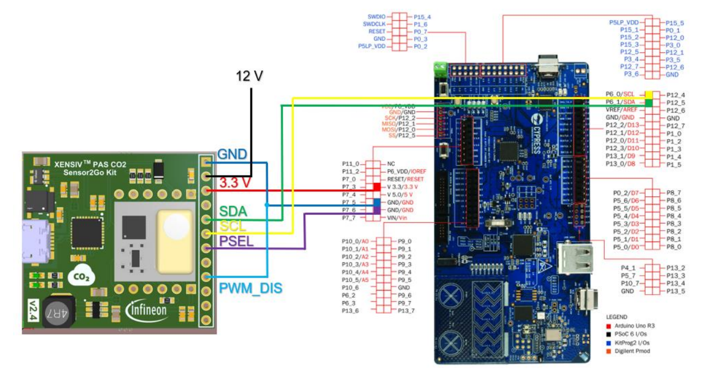
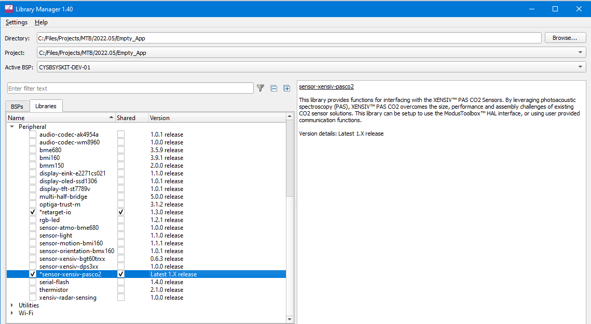
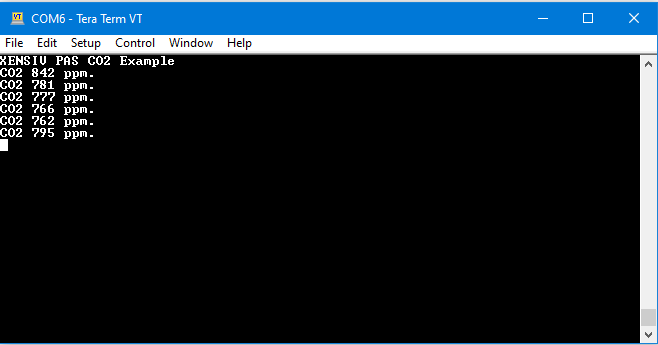

Overview
This library provides functions for interfacing with the XENSIV™ PAS CO2 sensor.
The sensor features a small form factor with accurate and robust performance at ppm level (±30 ppm ±3% of reading). The XENSIV™ PAS CO2 sensor integrates a photo-acoustic transducer and a microcontroller which runs ppm calculations as well as compensation and configuration algorithms on the PCB.
Quick start
For the hardware setup, check the "Quick start with the PSoC™ 6 Wi-Fi Bluetooth® pioneer kit" section of the Programming guide for XENSIV™ PAS CO2 sensor.
Figure 1. XENSIV™ PAS CO2 Sensor2Go kit I2C interface connection to the PSoC™ 6 Wi-Fi Bluetooth® pioneer kit


Alternatively you can use the CYSBSYSKIT-DEV-01 Rapid IoT Connect Developer Kit together with the XENSIV™ PAS CO2 Wing Board.
Do the following to create a simple application which outputs the CO2 ppm data from the sensor to the UART.
- Create an empty ModusToolbox application for your board, e.g. CYSBSYSKIT-DEV-01.
Add this library, i.e. sensor-xensiv-pasco2, to the application using the Library Manager.
Figure 2. Library Manager


- Add the retarget-io library using the Library Manager.
- Place the following code in the main.c file.
- Define I2C SDA and SCL as appropriate for your hardware configuration. Note If using CYSBSYSDEV-DEV-01 kit and PAS CO2 wingboard, define macro USE_CYSBSYSDEV_KIT_01_WINGBOARD
- Connect the board to your PC using the provided USB cable through the KitProg3 USB connector.
- Open a terminal program and select the KitProg3 COM port. Set the serial port parameters to 8N1 and 115200 baud.
Build the application and program the kit. After programming, the application starts automatically.
Figure 3. Terminal output on program startup


Use the library in your own platform
The library can be used in your own platform copying following files to your project:
- xensiv_pasco2.c
- xensiv_pasco2.h
- xensiv_pasco2_platform.h
- xensiv_pasco2_regs.h.
The library depends on platform-specific implementation of functions declared in xensiv_pasco2_platform.h:
See an implementation for the platform-specific functions in xensiv_pasco2_mtb.c using the PSoC™ 6 HAL.
More information
- PAS CO2 sensor API reference guide
- XENSIV™ PAS CO2 sensor
- Connected sensor kit
- EVAL_PASCO2_MINIBOARD
- Infineon Technologies website
- Infineon Technologies GitHub repos
- ModusToolbox™ software
© Infineon Technologies AG, 2021-2022.